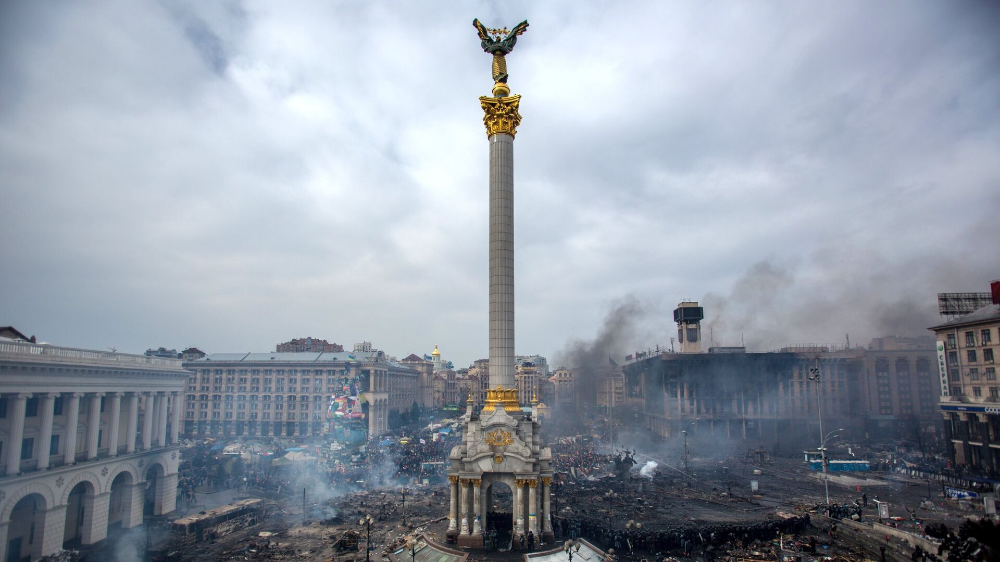

Наши цели
Сохранение памяти
Оцифровка и реставрация исторических фотоматериалов
Доступность
Бесплатный онлайн-доступ к архивным материалам
Образование
Интерактивные материалы для студентов и исследователей
Хронология
Визуализация исторических событий через фото
Фотоархив



До Первой Мировой войны (1900-1914)
Эпоха расцвета европейских империй, технического прогресса и культурного развития. Основные характеристики периода:
- Бурное развитие промышленности
- Создание первых автомобилей и самолётов
- Расцвет модерна в архитектуре
- Формирование системы международных союзов

Россия, 1812 год. деревня Бородино
Первая Мировая война (1914-1918)
Великая война, перекроившая карту мира:
- Использование новых видов оружия
- Окопная война и химические атаки
- Распад четырёх империй
- Революционные изменения в обществе

Западный фронт, 1916 год
Вторая Мировая война (1939-1945)
Самая масштабная война в истории человечества:
- Глобальный характер боевых действий
- Использование ядерного оружия
- Холокост и военные преступления
- Формирование новой системы международных отношений

Берлин, май 1945 года
Современность (1945-наши дни)
Эпоха глобализации и технологической революции:
- Холодная война и распад СССР
- Цифровая революция
- Глобальные экологические проблемы
- Новые вызовы международной безопасности

Бахмут, 2023 год